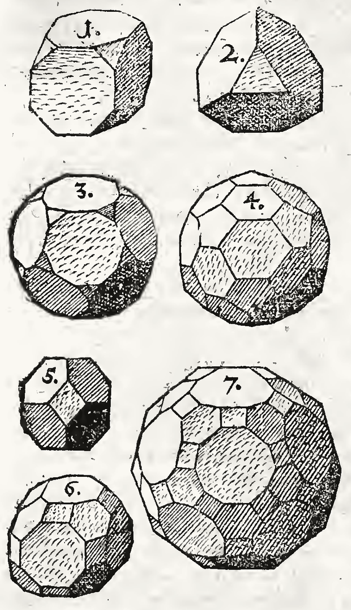

Proposition XXVIII: The Thirteen Species of Archimedean Solids¶
Proposition XXVIII.
Of perfect solid congruences of the lower degree there are thirteen species, from which arise the thirteen :term:`Archimedean Bodies <archimedean-solids>`.
f. 0086 · p. 62For since diverse figures are mingled in this degree, by Proposition XXI figures of either two or three species will be mingled. Now if of two, then among them either there are triangles or there are not.
Therefore from triangles and squares are formed three solids to which Definition IX applies. For that definition rejects these three forms in which a solid angle is enclosed with one square plane angle by either two or three triangular plane angles, or with two square angles by one triangular angle; because in the first case there is only one square, and it becomes half an Octahedron, and the solid angles are diverse in form; in the second there are only two squares, and in the third only two triangles—which by Definition X are imperfect congruences.
There remain therefore these modes in which plane angles enclose a solid angle: First, four triangles and one square. For these are less than four right angles. Therefore six squares and thirty-two (that is, 20 and 12) triangles are congruent, and there arises a thirty-eight-faced figure, which I call the Snub Cube (Cubus simus). It is depicted in the following diagram as Number 12.
For five triangular plane angles and one square angle exceed four right angles, whereas to enclose a solid they ought to be less than four right angles, by Proposition XVI. So too four triangles and two squares. Three triangles and two squares make four right angles.
Secondly, two triangles and two squares have less than four right angles; here therefore eight triangles and six squares are congruent to form one fourteen-faced figure, which I call the Cuboctahedron. It is depicted here as Number 8. But two triangles with three squares exceed four right angles.
Thirdly, one triangle and three squares have less than four right angles. Here therefore eight triangles and eighteen (that is, 12 and 6) quadrangles are congruent into one twenty-six-faced figure, which I call the cut Cuboctahedral Rhombus, or Rhombicuboctahedron. It is depicted here as Number 10.
In these three, therefore, squares stand beside triangles: it follows that we also associate pentagons with them separately.
Five plane triangles do not stand beside one pentagon, because they could not stand even beside a square, which is smaller than it. Therefore four triangles with one pentagon make less than four right angles, and eighty (that is, 20 and 60) triangles are congruent with twelve pentagons to form a ninety-two-faced figure, which I call the Snub Dodecahedron (Dodecaëdron simum): it is depicted here as Number 13. And in this order of snubs, the Icosahedron could be the third, being as it were a snub Tetrahedron.

If you associate three plane triangles with one pentagon, what happened above occurs, that only two pentagons enter the solid; and if two triangles with one pentagon, only one pentagon enters the solid: and in the former case there arises a middle belt or column, in the latter a pyramid—parts of an Icosahedron—nor are the solid angles here of the same species, because one is surrounded, as in the Icosahedron, by five triangles. And we have done with a single pentagon.
But three triangles with two pentagons make more than four right angles. We have done therefore with admitting three triangles into the society of pentagons.
Two triangles with two pentagons make less than four right angles. Therefore twenty triangles and twelve pentagons are congruent into one thirty-two-faced figure, which I call the Icosidodecahedron. It is depicted here as Number 9. With one pentagon we already rejected two triangles. We have done therefore with two triangles.
One triangle with three pentagons makes more than four right angles, while with two, by Proposition XXIII, nothing regular arises, because the pentagon is an odd-sided figure. And thus we have done with pentagons in the society of triangles.
Four triangles with one hexagon, and two with two hexagons, fill a plane; while three with two are greater than four right angles, since two triangles equal one hexagon, wherefore they are rejected by Axiom XXII. It remains that one triangle be coupled with two hexagons. Accordingly, four triangles are congruent with four hexagons into one eight-faced figure, which I call the Truncated Tetrahedron. It is depicted as Number 2 on the following folio.
Four triangles with one heptagon and larger figures exceed four right angles; no further mention therefore is to be made of four triangles, nor of three either, for the reasons often alleged; and two triangles with two planes of one figure greater than a hexagon exceed four right angles; no further mention therefore is to be made of two triangles with two planes of a larger figure, nor of two with one plane of a larger figure, because the former are exceeded by the latter, which is rejected by Axiom XXII. There remains to be examined this case, when one triangle is coupled with two planes of a figure greater than a hexagon: now with two heptagons it is rejected by Proposition XXIII, as also with two of all odd-sided figures; with two octagons, however, a body is formed in which eight triangles and six octagons are congruent into one fourteen-faced figure, which I call the Truncated Cube. You have its figure marked Number 1 on the following folio.
With two decagons, a body is formed in which twenty triangles and twelve decagons are congruent into one thirty-two-faced figure, which I call the Truncated Dodecahedron. It is marked among the following figures as Number 3. With two dodecagons a plane is filled, nor does a solid angle arise, and much less with larger figures. And we have done altogether with triangles, in a duality of species at least.
Since therefore among two species of planes there are no longer any triangles, the smallest figure henceforth will be the square. Now three squares with one angle of a larger plane exceed four right angles; and two squares with one of a larger are not tolerated, because of Definition IX, since only two faces of the larger species of figure would be received into the solid. One square therefore with two pentagons is rejected by Proposition XXIII; with two hexagons it meets, and six squares are congruent with eight hexagons into one fourteen-faced figure, which I call the Truncated Octahedron, depicted as Number 5 of the following diagram. One square with two heptagons and other
odd-sided figures is rejected by Proposition XXIII; with two octagons it fills a plane place; with larger figures it even exceeds four right angles, nor does it rise to form a solid angle. Thus we have done with the square, when there ought to be only two species of planes.
Two pentagons with one hexagon or any other single figure begin something rejectable, by Proposition XXIII, as we noted above also of a triangle and a square with two pentagons. Moreover, with one decagon they pave a plane, nor do they rise into solidity with it or with larger figures.
One pentagon therefore with two hexagons makes less than four right angles; and twelve pentagons are congruent with twenty hexagons into one thirty-two-faced figure, which I call the Truncated Icosahedron. You have its form marked Number 4. Nor is anything more to be expected from the pentagon; for one pentagon with two heptagons already exceeds four right angles.
A hexagon with two others fills a plane, and with larger figures exceeds four right angles. And so here is the end of figures mingled from two species.
Now if planes of three species can meet at one solid angle: First, two plane angles, one of a square and the other of a pentagon, exceed two right angles, and larger ones much more so; while three angles of three triangles equal two right angles: three triangles therefore cannot be admitted, lest the whole sum exceed four right angles. And two triangles with one square and one pentagon—or instead of it a hexagon, or any larger figure—are rejected by Proposition XXIII, because the triangle, an odd-sided figure, would have to be girded by a square and a pentagon, or instead of it a hexagon, and so forth.
One triangle therefore with two squares and one pentagon makes less than four right angles, and 20 triangles are congruent with 30 squares and 12 pentagons into one sixty-two-faced figure, which I call the Rhombicosidodecahedron, or cut Icosidodecahedral Rhombus. It is depicted as Number 11 on the preceding folio.
One triangle and two squares with one hexagon equal four right angles; with one larger figure they exceed them, nor do they rise to a solid. Let us dismiss therefore two squares.
One triangle, one square, and two pentagons exceed four right angles; and much more so if two larger plane angles were mingled in. Thus four plane angles cease to be mingled to form one solid: therefore the triangle also ceases to enter into a threefold mixture. For one triangle, one square,


and one pentagon, or any other in place of this, are rejected by Proposition XXIV, because the triangle is an odd-sided figure.
Since therefore there are henceforth only three plane angles, no odd-sided figure is tolerated among the figures, by the same Proposition XXIV.
A square therefore, with a hexagon and an octagon (the smallest available), makes less than four right angles; and 12 squares, 8 hexagons, and 6 octagons are congruent into one twenty-six-faced figure, which I call the Truncated Cuboctahedron—not because it can arise by truncation, but because it is like a truncated Cuboctahedron. It is depicted as Number 6.
A square with a hexagon and a decagon makes less than four right angles; and 30 squares, 20 hexagons, and 12 decagons are congruent into one sixty-two-faced figure, which I call the Truncated Icosidodecahedron, for a like reason as the last. It is depicted as Number 7.
If instead of the decagon a dodecagon succeeds into the partnership, four right angles are filled, nor is a solid formed; so also if instead of the hexagon an octagon succeeds, and some figure greater than an octagon is the third, four right angles are exceeded; nor if the square is absent and three larger figures of distinct even-sided species are associated. Therefore the entire family of Archimedean solids stands within the number thirteen, which was to be demonstrated.
Corollary XXIX¶
The congruent figures are twelve in all: eight radical or primary, and four augmented or stars:
Triangle. 2. Square. 3. Pentagon. 4. Hexagon. 5. Octagon. 6. Decagon. 7. Dodecagon. 8. Icosigon. 9. Pentagonal Star. 10. Octagonal Star. 11. Decagonal Star. 12. Dodecagonal Star.
Their degrees of congruence are distinct. In the first rank are the Triangle and the Square, because they are congruent both in the solid and in the plane, both of single species among themselves and joined together, and with others.
In the second degree stand the Pentagon with its star. For they are congruent both of single species among themselves in the solid, and render mutual aid in the plane; yet the Pentagon is superior, because it is also congruent with several others both in the plane and in the solid.
The third is that of the Hexagon, because figures of this species are congruent in the plane, and with others both in the solid and in the plane.
The fourth degree is held by the Octagon and the Decagon with their stars. For those radicals are congruent with several others in the solid, and the stars in a certain measure with figures of single species; while in the plane all four are congruent with others, yet more variously and more perfectly the Octagonal sect.
The fifth degree holds the Dodecagon with its star; because in the solid indeed they are congruent least of all, yet in the plane in manifold ways with others; in the solid, therefore, they are hindered solely by magnitude. On account of the plane, this sect is to be preferred to the fourth degree.
The last degree is that of the Icosigon, because it is congruent only in the plane, and only with others, and even with those imperfectly.